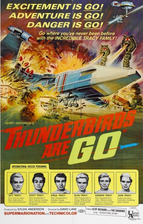
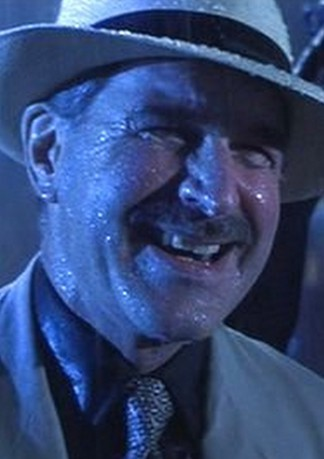

#9987 Thunderbirds Are GO
Alternativ: Feuervögel startbereit (Originaltitel)
 
 IMDB-Wertung: 6.5 / 10
IMDB-Wertung: 6.5 / 10  Tomatometer: 57
Tomatometer: 57  Metascore: 0
Metascore: 0 
Das mit fünf Astronauten besetzte Raumschiff Zero-X startet vom Weltraumbahnhof Glenn Field in den Vereinigten Staaten zur ersten bemannten Reise zum Mars. Doch nur wenige Minuten nach dem Abheben treten technische Schwierigkeiten auf und die Maschine stürzt ab. Die Besatzung kann sich glücklicherweise in letzter Sekunde retten. Später wird festgestellt, daß es sich bei den Problemen um Sabotage handelte. Als sich der Mars zwei Jahre später wieder in einer günstigen Stellung zur Erde befindet, beschließt man eine zweite Mission zu starten.
Jahr: 1966
Dauer: 93 Minuten
FSK: 6
Land: England Studio: Concorde Home EntertainmentTonspuren: DTS - ,
Untertitel: Deutsch,
Auflösung: 1080p (1920x816) Größe: 8529 MB
Genre: Action, Sci-Fi
Regisseur: David Lane
Drehbuch: Gerry Anderson, Sylvia Anderson
Soundtrack: Barry Gray
Darsteller:
- Ray Barrett als John Tracy / The Hood
- Alexander Davion als Space Captain Greg Martin
- Peter Dyneley als Jeff Tracy
- David Graham als Gordon Tracy / Brains / Parker
-  Paul Maxwell als Captain Paul Travers
- Bob Monkhouse als Space Navigator Brad Newman / Swinging Star Compere
 Shane Rimmer als Scott Tracy
Shane Rimmer als Scott Tracy- Charles 'Bud' Tingwell als Dr. Tony Grant / Angry Young Man / Public Relations Officer
- Cliff Richard als Cliff Richard Jr. (uncredited)
- Sylvia Anderson als Lady Penelope Creighton-Ward
- Christine Finn als Tin-Tin Kyrano
- Neil McCallum als Dr. Ray Pierce
- Jeremy Wilkin als Virgil Tracy / Space Exploration Center President
- Matt Zimmerman als Alan Tracy / Messenger
- F. Vivian Dunn als Himself (uncredited)
- The Shadows als Themselves (uncredited)
Datei: X:\Kinder Collections\Thunderbirds\Thunderbirds Are GO (1966, FSK6, 1920x816).mkv seit 15.11.2018
Festplatte: Kinder-Filme+Trick
 Alle Filme aus Gruppe 'Kinder Collections\Thunderbirds'
Alle Filme aus Gruppe 'Kinder Collections\Thunderbirds'